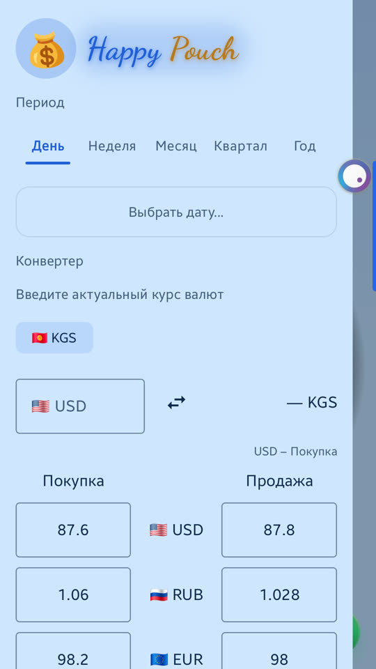

Конвертер устроен как табло в обменном пункте: у каждой валюты есть цена покупки и цена продажи. Курсы вы вводите сами — приложение их не скачивает и работает без интернета.
Откройте боковое меню — кнопка с тремя полосками слева вверху на «Главной», в «Записях» или «Статистике». Конвертер стоит под выбором периода.

Все курсы записываются по отношению к домашней валюте — той, в которой вы сейчас ведёте учёт. Она показана кнопкой с флагом над полем суммы. Сменить её можно в «Настройках», раздел «Валюты»: отметьте нужную как «Домашняя».
Нажмите «+ Валюта» под табло и введите название или код: «USD», «евро», «рубль». Валюта появится в списке; домашняя при этом не меняется.
У каждой валюты в табло два поля:
| Поле | Что в него писать |
|---|---|
| Покупка | Сколько домашней валюты обменник даёт вам за одну единицу этой валюты. |
| Продажа | Сколько домашней валюты обменник берёт с вас за одну единицу этой валюты. |
Пример: домашняя валюта — сом, на табло обменника доллар стоит 87,10 / 87,60. В «Покупку» пишете 87.1, в «Продажу» — 87.6.
Достаточно заполнить одно поле: тогда эта цена используется в обе стороны. Пустое поле или ноль означают, что курса нет. Курс сохраняется сразу, кнопки «Сохранить» нет.
Под результатом написано, какая цена использована, например «$ – Покупка».
Потому что так работает обменник. Когда вы меняете доллары на сомы, обменник у вас покупает — считается цена покупки. Когда меняете сомы на доллары, он вам продаёт — считается цена продажи. Приложение выбирает цену само по направлению стрелки.
Нужна другая цена — нажмите на её поле в табло: оно подсветится, и расчёт пойдёт по ней.
Нажмите на цену одной валюты, затем на цену другой — например, доллар и евро. В расчёте останутся они две, без домашней. Чтобы вернуть домашнюю, нажмите на её кнопку с флагом над полем суммы.
Прямой курс между ними вводить не нужно: приложение считает через домашнюю валюту. Если у новой валюты курса к домашней ещё нет, но есть курс к другой валюте, у которой он есть, расчёт пройдёт через неё.
Конвертер ничего не записывает в расходы и доходы. Это калькулятор: он считает, сколько вы получите при обмене, но сам обмен в учёт не вносит.